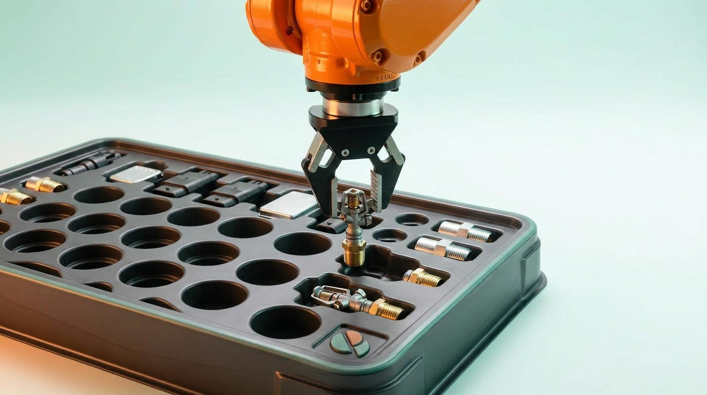
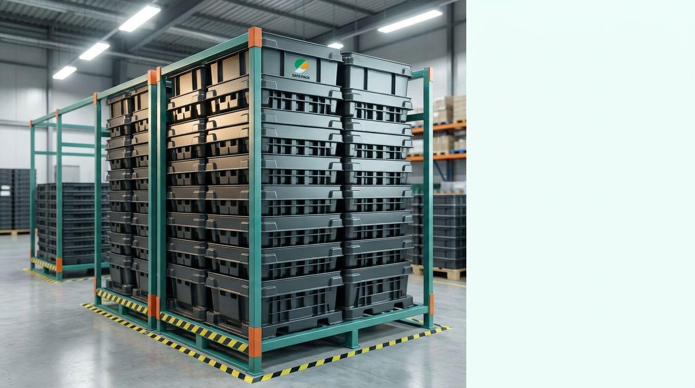

”
ロボットがワークを
安定して掴めない
トレイ内で部品の位置や向きがズレると、ピックアップミスや設備停止の原因になります。自動機の動きに合わせた保持設計が必要です。
生産技術・設備担当の方へ
01省人化
02品質安定
03作業時間短縮
自動化トレイで実現
ものづくり ワールド東京 2026
2026.7.1 wed - 7.3 fri / 東京ビックサイト
ブース番号：決定次第記載
トレイ内で部品の位置や向きがズレると、ピックアップミスや設備停止の原因になります。自動機の動きに合わせた保持設計が必要です。
生産技術・設備担当の方へ
ワークの形状、接触して良い部分、段積み条件、材質指定など、現場ごとに必要な条件は異なります。既製品では対応しきれないケースがあります。
購買・資材担当の方へ
工程間搬送や保管時に部品が動くと、キズ・変形・向き違いなどのリスクにつながります。部品を決まった姿勢で保つ設計が重要です。
品質・工程管理者の方へ

ワーク形状に合わせた受け部で、位置ズレや向き違いを抑え、ロボットが安定して掴める状態を保ちます。

ロボットのチャック位置や動作範囲を考慮し、掴む動きを妨げない形状に設計します。

工程間の搬送や保管、段積み時にもワークが動きにくい形状を設計します。
ワーク形状や自動機の
動きに合わせたトレイを設計
設計から雛形作成まで
社内でスピーディーに対応
営業が技術的な内容
まで理解して、相談に対応
要求仕様の整理から試作・
量産まで伴走
ワークの接触可否、自動機の動き、材質・段積み条件を確認します。
ワークの3Dデータや要求仕様をもとに、トレイ形状を図面化します。
2D・3Dデータを確認いただき、量産前の仕様をすり合わせます。
1マスのみ試作しワークの収まりや形状を確認します。
試作評価後、承認をいただいて量産型を製作します。
量産品を生産し、品質を確認したうえで納品します。


ものづくり ワールド東京2026でも
ご相談いただけます。
ブース番号：決定次第掲載